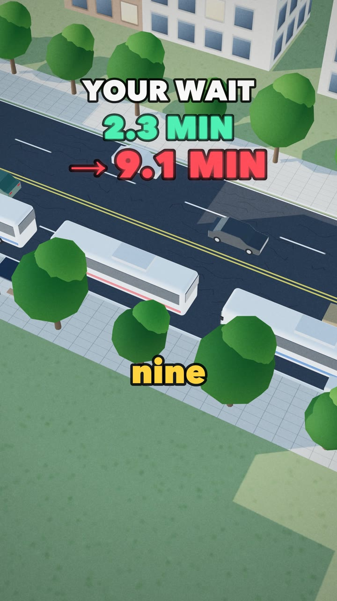

버스는 왜 꼭 두 대씩 같이 올까? — 2초 늦은 버스 한 대의 6시간
아무도 잘못하지 않았는데 버스가 뭉치는 이유
버스가 정류장에 섰다. 탈 사람은 다 탔다. 문도 닫혔다. 그런데 출발하지 않는다.
십 초. 이십 초. 나는 속으로 기사님을 재촉했다. 아니, 왜 안 가요. 약속 시간은 다가오고, 휴대폰 시계 숫자가 자꾸 커 보인다. 다른 승객들도 하나둘 창밖을 본다. 말은 없어도 다 같은 마음이다.
기다림이 유독 서러운 날이 있다. 찬 바람 부는 저녁, 정류장에서 앱을 새로 고칠 때마다 "곧 도착"이 "7분"으로 바뀌는 날. 그렇게 한참을 떨다가 마침내 버스가 온다. 두 대가 나란히. 앞차는 꽉 찼고, 뒤차는 텅 비었다.
그 순간의 감정은 짜증보다 허탈함에 가깝다. 저 두 대가 5분씩만 떨어져 왔어도, 나는 덜 추웠을 텐데.
왜 하필, 꼭 두 대씩일까.
· · ·
2초의 시작
기사님이 게으른 걸까. 배차를 엉터리로 짠 걸까. 궁금한 건 못 참는 성격이라, 결국 컴퓨터 속에 버스 노선을 하나 만들었다.
정류장 24곳을 도는 순환 노선. 버스 6대가 약 4분 40초 간격으로 고르게 출발한다. 승객은 정류장마다 꾸준히 와서 줄을 서고, 버스는 줄이 빌 때까지 태운다.
딱 하나만 어긋나게 했다. 버스 한 대가 앞차보다 2초쯤 늦게 출발한다.

2초. 신호 한 번 놓친 것보다 짧다.
그런데 그 버스가 다음 정류장에 도착하면, 앞차가 떠난 지 2초 더 지난 셈이다. 그사이 사람이 조금 더 와 있다. 사람이 많으니 태우는 데 조금 더 걸린다. 그래서 다음 정류장에는 조금 더 늦게 닿는다. 거기엔 사람이 조금 더 많다.

늦을수록 더 늦어지는 고리. 한번 들어가면 혼자서는 빠져나오지 못한다.
· · ·
뒤차는 거꾸로 빨라진다
뒤따라오는 버스는 정반대다. 앞차가 사람을 많이 태워 갔으니 정류장이 한산하다. 금방 태우고 금방 떠난다. 점점 빨라진다.
앞차는 점점 느려지고, 뒤차는 점점 빨라진다. 간격은 줄어들 수밖에 없다.

화면 속 두 버스는 출발 후 두 시간쯤 지나 딱 붙어 버렸다. 같은 일이 다른 버스들 사이에서도 일어났다.
여섯 시간 뒤. 고르게 흩어져 있던 버스 6대가 한 덩어리가 되어 함께 달리고 있었다. 정류장에는 버스 여섯 대가 줄줄이 지나간 뒤, 한참 동안 아무것도 오지 않았다.

정류장에서 기다리는 시간은 평균 2.3분에서 9.1분이 됐다. 버스 수도, 승객 수도, 도로도 그대로인데.
아무도 잘못하지 않아도, 버스는 뭉친다.
버스를 늘리거나, 일부러 기다리게 하면 어떻게 될까. 직접 돌려 보자.
→ 버스 몰림 실험, 직접 돌려 보기
· · ·
거꾸로 같은 해법
버스를 6대에서 8대로 늘려 봤다. 평균 기다림은 5.3분으로 줄었다. 하지만 8대가 고르게 다닐 때(1.7분)의 세 배다. 버스는 여전히 뭉쳤다. 더 빨리 달리게 해도 7.6분. 역시 뭉쳤다.
효과가 있었던 건 거꾸로 들리는 방법이었다. 버스를 정류장에서 기다리게 하는 것. 앞차와의 간격이 충분히 벌어질 때까지 뒤차가 잠깐 서 있으면, 뭉침이 풀리고 평균 기다림이 다시 2분대로 돌아왔다.
1964년, 두 연구자(Newell과 Potts)가 이 고리를 처음 정리했다. 지금도 많은 도시가 간격을 맞추려고 버스를 정류장에 잠깐 세운다.
그러니까 그날 출발하지 않던 버스는, 게으른 게 아니었을지도 모른다. 다음 정류장에서 기다리는 누군가를 위해, 앞차와의 거리를 재고 있었을지도.
이제 나는 서 있는 버스 안에서 재촉하지 않는다. 대신 창밖을 본다. 저 앞 어딘가에서, 내 버스가 지켜 준 간격만큼 누군가의 기다림이 줄어들고 있을 테니까.
여러분 동네 버스는 어떤가요? 두 대씩 오는 노선이 있다면 댓글로 알려 주세요.
덧붙임. 글 속의 숫자는 사이트 시뮬레이션 모델 결과다(정류장 24곳, 버스 6대, 승객 시간당 40명, 시드 1. 평균 기다림은 8번 반복 평균). 실제 노선의 기록이 아니다. 근거: G. F. Newell & R. B. Potts (1964), "Maintaining a bus schedule". 그림은 직접 만든 3D 시뮬레이션 화면이며, 글 정리에 AI(Claude)의 도움을 받았다.
— 시뮬라티오 랩, Lab장
이 이야기, 영상과 실험으로 더 보기
 🎬 롱폼 영상
🎬 롱폼 영상 📺 채널 구독
📺 채널 구독휴대폰 카메라로 QR을 비추면 바로 열려요 · 실험 80여 개는 simulatiolab.com
네이버 블로그로 옮기기
① 제목 → 제목 칸 ⌘V · ② 본문 → 본문 ⌘V (사진도 함께 붙어요. 안 붙으면 사진만 따로 올리기) · ③ 태그 → 발행 창 태그 칸 · ④ 카테고리 돌려 보는 실험실 · 주제 교육·학문 · ⑤ 발행 뒤 네이버 주소를 content/03-bus-bunching.md 의 naver_url에 적기
🧪 직접 돌려 보기 · ▶ 쇼츠 영상 · 🎬 롱폼 영상 · 📺 채널 구독
버스가 정류장에 섰다. 탈 사람은 다 탔다. 문도 닫혔다. 그런데 출발하지 않는다.
십 초. 이십 초. 나는 속으로 기사님을 재촉했다. 아니, 왜 안 가요. 약속 시간은 다가오고, 휴대폰 시계 숫자가 자꾸 커 보인다. 다른 승객들도 하나둘 창밖을 본다. 말은 없어도 다 같은 마음이다.
기다림이 유독 서러운 날이 있다. 찬 바람 부는 저녁, 정류장에서 앱을 새로 고칠 때마다 "곧 도착"이 "7분"으로 바뀌는 날. 그렇게 한참을 떨다가 마침내 버스가 온다. 두 대가 나란히. 앞차는 꽉 찼고, 뒤차는 텅 비었다.
그 순간의 감정은 짜증보다 허탈함에 가깝다. 저 두 대가 5분씩만 떨어져 왔어도, 나는 덜 추웠을 텐데.
왜 하필, 꼭 두 대씩일까.
· · ·
2초의 시작
기사님이 게으른 걸까. 배차를 엉터리로 짠 걸까. 궁금한 건 못 참는 성격이라, 결국 컴퓨터 속에 버스 노선을 하나 만들었다.
정류장 24곳을 도는 순환 노선. 버스 6대가 약 4분 40초 간격으로 고르게 출발한다. 승객은 정류장마다 꾸준히 와서 줄을 서고, 버스는 줄이 빌 때까지 태운다.
딱 하나만 어긋나게 했다. 버스 한 대가 앞차보다 2초쯤 늦게 출발한다.

처음엔 2초 늦었을 뿐인 버스
2초. 신호 한 번 놓친 것보다 짧다.
그런데 그 버스가 다음 정류장에 도착하면, 앞차가 떠난 지 2초 더 지난 셈이다. 그사이 사람이 조금 더 와 있다. 사람이 많으니 태우는 데 조금 더 걸린다. 그래서 다음 정류장에는 조금 더 늦게 닿는다. 거기엔 사람이 조금 더 많다.

늦은 버스의 정류장에는 사람이 더 쌓인다
늦을수록 더 늦어지는 고리. 한번 들어가면 혼자서는 빠져나오지 못한다.
· · ·
뒤차는 거꾸로 빨라진다
뒤따라오는 버스는 정반대다. 앞차가 사람을 많이 태워 갔으니 정류장이 한산하다. 금방 태우고 금방 떠난다. 점점 빨라진다.
앞차는 점점 느려지고, 뒤차는 점점 빨라진다. 간격은 줄어들 수밖에 없다.

두 버스 사이의 간격이 1분 54초에서 6초로 줄어든다
화면 속 두 버스는 출발 후 두 시간쯤 지나 딱 붙어 버렸다. 같은 일이 다른 버스들 사이에서도 일어났다.
여섯 시간 뒤. 고르게 흩어져 있던 버스 6대가 한 덩어리가 되어 함께 달리고 있었다. 정류장에는 버스 여섯 대가 줄줄이 지나간 뒤, 한참 동안 아무것도 오지 않았다.

6시간 뒤, 버스 6대가 한 덩어리로
정류장에서 기다리는 시간은 평균 2.3분에서 9.1분이 됐다. 버스 수도, 승객 수도, 도로도 그대로인데.
아무도 잘못하지 않아도, 버스는 뭉친다.
버스를 늘리거나, 일부러 기다리게 하면 어떻게 될까. 직접 돌려 보자.
→ 버스 몰림 실험, 직접 돌려 보기
· · ·
거꾸로 같은 해법
버스를 6대에서 8대로 늘려 봤다. 평균 기다림은 5.3분으로 줄었다. 하지만 8대가 고르게 다닐 때(1.7분)의 세 배다. 버스는 여전히 뭉쳤다. 더 빨리 달리게 해도 7.6분. 역시 뭉쳤다.
효과가 있었던 건 거꾸로 들리는 방법이었다. 버스를 정류장에서 기다리게 하는 것. 앞차와의 간격이 충분히 벌어질 때까지 뒤차가 잠깐 서 있으면, 뭉침이 풀리고 평균 기다림이 다시 2분대로 돌아왔다.
1964년, 두 연구자(Newell과 Potts)가 이 고리를 처음 정리했다. 지금도 많은 도시가 간격을 맞추려고 버스를 정류장에 잠깐 세운다.
그러니까 그날 출발하지 않던 버스는, 게으른 게 아니었을지도 모른다. 다음 정류장에서 기다리는 누군가를 위해, 앞차와의 거리를 재고 있었을지도.
이제 나는 서 있는 버스 안에서 재촉하지 않는다. 대신 창밖을 본다. 저 앞 어딘가에서, 내 버스가 지켜 준 간격만큼 누군가의 기다림이 줄어들고 있을 테니까.
💡 오늘의 인사이트
✔ 두 대가 붙어 오면 뒤차를 타자. 앞차가 줄 선 사람을 거의 다 태워 가기 때문에, 바로 뒤따라오는 차는 대개 훨씬 한산하다. 놓쳤다고 뛸 필요도 없다. 뒤차가 곧 온다.
✔ "늦을수록 더 늦어지는 고리"를 알아차리자. 밀린 메일, 미룬 숙제, 쌓인 설거지. 늦어진 만큼 일이 불어나서 더 늦어진다. 이 고리는 속도를 올려서가 아니라 간격을 다시 맞춰야 풀린다.
✔ 빠름보다 고름. 팀 업무든 공부 계획이든, 한 번 몰아서 빨리 하는 것보다 일정한 간격으로 꾸준히 하는 편이 모두의 기다림을 줄인다.
여러분 동네 버스는 어떤가요? 두 대씩 오는 노선이 있다면 댓글로 알려 주세요.
덧붙임. 글 속의 숫자는 사이트 시뮬레이션 모델 결과다(정류장 24곳, 버스 6대, 승객 시간당 40명, 시드 1. 평균 기다림은 8번 반복 평균). 실제 노선의 기록이 아니다. 근거: G. F. Newell & R. B. Potts (1964), "Maintaining a bus schedule". 그림은 직접 만든 3D 시뮬레이션 화면이며, 글 정리에 AI(Claude)의 도움을 받았다.
— 시뮬라티오 랩, Lab장
이 이야기, 영상과 실험으로 더 보기

🧪 직접 돌려 보기: simulatiolab.com/bunching
▶ 쇼츠 영상: youtube.com/shorts/CkFnlk4zI80
🎬 롱폼 영상: youtu.be/UEsRhXsq7wA
📺 채널 구독: www.youtube.com/@simulatiolab?sub_confirmation=1
· · ·
📮 다음 편 예고 · 2026. 11. 24. (화)
새치기가 이득인데 왜 다들 안 할까? — 2,500명 실험이 보여 준 눈총의 힘
새치기는 분명 이득이다. 그런데 왜 대부분의 사람은 줄을 설까? 2,500명을 모아 "가장 잘되는 사람을 따라 하라"는 규칙 하나만 줬더니, 새치기가 순식간에 99%까지 번졌다. 그 흐름을 뒤집은 건 법도 벌금도 아닌, 다섯 명 중 한 명의 눈빛이었다.
이웃 추가해 두시면 새 글이 올라올 때 알려 드려요.
🧪 직접 돌려 보기 · ▶ 쇼츠 영상 · 🎬 롱폼 영상 · 📺 채널 구독
버스가 정류장에 섰다.
탈 사람은 다 탔다.
문도 닫혔다.
그런데 출발하지 않는다.
십 초.
이십 초.
나는 속으로 기사님을 재촉했다.
아니, 왜 안 가요.
약속 시간은 다가오고,
휴대폰 시계 숫자가 자꾸 커 보인다.
다른 승객들도 하나둘 창밖을 본다.
말은 없어도 다 같은 마음이다.
기다림이 유독 서러운 날이 있다.
찬 바람 부는 저녁,
정류장에서 앱을 새로 고칠 때마다 "곧 도착"이 "7분"으로 바뀌는 날.
그렇게 한참을 떨다가 마침내 버스가 온다.
두 대가 나란히.
앞차는 꽉 찼고, 뒤차는 텅 비었다.
그 순간의 감정은 짜증보다 허탈함에 가깝다.
저 두 대가 5분씩만 떨어져 왔어도,
나는 덜 추웠을 텐데.
왜 하필, 꼭 두 대씩일까.
· · ·
2초의 시작
기사님이 게으른 걸까.
배차를 엉터리로 짠 걸까.
궁금한 건 못 참는 성격이라,
결국 컴퓨터 속에 버스 노선을 하나 만들었다.
정류장 24곳을 도는 순환 노선.
버스 6대가 약 4분 40초 간격으로 고르게 출발한다.
승객은 정류장마다 꾸준히 와서 줄을 서고,
버스는 줄이 빌 때까지 태운다.
딱 하나만 어긋나게 했다.
버스 한 대가 앞차보다 2초쯤 늦게 출발한다.
처음엔 2초 늦었을 뿐인 버스
2초.
신호 한 번 놓친 것보다 짧다.
그런데 그 버스가 다음 정류장에 도착하면,
앞차가 떠난 지 2초 더 지난 셈이다.
그사이 사람이 조금 더 와 있다.
사람이 많으니 태우는 데 조금 더 걸린다.
그래서 다음 정류장에는 조금 더 늦게 닿는다.
거기엔 사람이 조금 더 많다.
늦은 버스의 정류장에는 사람이 더 쌓인다
늦을수록 더 늦어지는 고리.
한번 들어가면 혼자서는 빠져나오지 못한다.
· · ·
뒤차는 거꾸로 빨라진다
뒤따라오는 버스는 정반대다.
앞차가 사람을 많이 태워 갔으니 정류장이 한산하다.
금방 태우고 금방 떠난다.
점점 빨라진다.
앞차는 점점 느려지고, 뒤차는 점점 빨라진다.
간격은 줄어들 수밖에 없다.
두 버스 사이의 간격이 1분 54초에서 6초로 줄어든다
화면 속 두 버스는 출발 후 두 시간쯤 지나 딱 붙어 버렸다.
같은 일이 다른 버스들 사이에서도 일어났다.
여섯 시간 뒤.
고르게 흩어져 있던 버스 6대가 한 덩어리가 되어 함께 달리고 있었다.
정류장에는 버스 여섯 대가 줄줄이 지나간 뒤,
한참 동안 아무것도 오지 않았다.
6시간 뒤, 버스 6대가 한 덩어리로
정류장에서 기다리는 시간은 평균 2.3분에서 9.1분이 됐다.
버스 수도, 승객 수도, 도로도 그대로인데.
아무도 잘못하지 않아도, 버스는 뭉친다.
버스를 늘리거나, 일부러 기다리게 하면 어떻게 될까. 직접 돌려 보자.
→ 버스 몰림 실험, 직접 돌려 보기
· · ·
거꾸로 같은 해법
버스를 6대에서 8대로 늘려 봤다.
평균 기다림은 5.3분으로 줄었다.
하지만 8대가 고르게 다닐 때(1.7분)의 세 배다.
버스는 여전히 뭉쳤다.
더 빨리 달리게 해도 7.6분.
역시 뭉쳤다.
효과가 있었던 건 거꾸로 들리는 방법이었다.
버스를 정류장에서 기다리게 하는 것.
앞차와의 간격이 충분히 벌어질 때까지 뒤차가 잠깐 서 있으면,
뭉침이 풀리고 평균 기다림이 다시 2분대로 돌아왔다.
1964년,
두 연구자(Newell과 Potts)가 이 고리를 처음 정리했다.
지금도 많은 도시가 간격을 맞추려고 버스를 정류장에 잠깐 세운다.
그러니까 그날 출발하지 않던 버스는,
게으른 게 아니었을지도 모른다.
다음 정류장에서 기다리는 누군가를 위해,
앞차와의 거리를 재고 있었을지도.
이제 나는 서 있는 버스 안에서 재촉하지 않는다.
대신 창밖을 본다.
저 앞 어딘가에서,
내 버스가 지켜 준 간격만큼 누군가의 기다림이 줄어들고 있을 테니까.
💡 오늘의 인사이트
✔ 두 대가 붙어 오면 뒤차를 타자. 앞차가 줄 선 사람을 거의 다 태워 가기 때문에, 바로 뒤따라오는 차는 대개 훨씬 한산하다. 놓쳤다고 뛸 필요도 없다. 뒤차가 곧 온다.
✔ "늦을수록 더 늦어지는 고리"를 알아차리자. 밀린 메일, 미룬 숙제, 쌓인 설거지. 늦어진 만큼 일이 불어나서 더 늦어진다. 이 고리는 속도를 올려서가 아니라 간격을 다시 맞춰야 풀린다.
✔ 빠름보다 고름. 팀 업무든 공부 계획이든, 한 번 몰아서 빨리 하는 것보다 일정한 간격으로 꾸준히 하는 편이 모두의 기다림을 줄인다.
여러분 동네 버스는 어떤가요?
두 대씩 오는 노선이 있다면 댓글로 알려 주세요.
덧붙임. 글 속의 숫자는 사이트 시뮬레이션 모델 결과다(정류장 24곳, 버스 6대, 승객 시간당 40명, 시드 1. 평균 기다림은 8번 반복 평균). 실제 노선의 기록이 아니다. 근거: G. F. Newell & R. B. Potts (1964), "Maintaining a bus schedule". 그림은 직접 만든 3D 시뮬레이션 화면이며, 글 정리에 AI(Claude)의 도움을 받았다.
— 시뮬라티오 랩, Lab장
이 이야기, 영상과 실험으로 더 보기
🧪 직접 돌려 보기: simulatiolab.com/bunching
▶ 쇼츠 영상: youtube.com/shorts/CkFnlk4zI80
🎬 롱폼 영상: youtu.be/UEsRhXsq7wA
📺 채널 구독: www.youtube.com/@simulatiolab?sub_confirmation=1
· · ·
📮 다음 편 예고 · 2026. 11. 24. (화)
새치기가 이득인데 왜 다들 안 할까? — 2,500명 실험이 보여 준 눈총의 힘
새치기는 분명 이득이다.
그런데 왜 대부분의 사람은 줄을 설까?
2,500명을 모아 "가장 잘되는 사람을 따라 하라"는 규칙 하나만 줬더니,
새치기가 순식간에 99%까지 번졌다.
그 흐름을 뒤집은 건 법도 벌금도 아닌,
다섯 명 중 한 명의 눈빛이었다.
이웃 추가해 두시면 새 글이 올라올 때 알려 드려요.